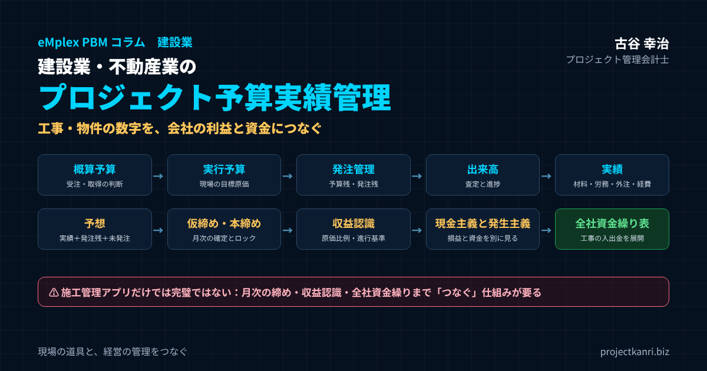

建設業・不動産業のプロジェクト予算実績管理―概算予算・実行予算・発注管理・出来高から、仮締め・本締め、収益認識（工事進行基準）、現金主義と発生主義、全社資金繰り表への展開まで。施工管理アプリだけでは完璧ではない理由

結論：建設業・不動産業の予算実績管理は「工事の数字」と「会社の利益・資金」をつなぐこと
この記事の要点
- 三つの数字：概算予算・実行予算 → 実績 → 予想（実績＋発注残＋未発注の見込み）
- 発注管理と出来高：実行予算は発注で守り、出来高で進捗と原価の消化を比べる
- 仮締め・本締め：月次の数字を確定・ロックし、会計の数字と一致させる
- 収益認識：進捗度は着地予想（見積総原価）で決まる。予想の精度が決算を左右する
- 資金：発生主義の損益とは別に、工事ごとの入出金を全社資金繰り表へ展開する
- 施工管理アプリ：現場の道具として活用し、経営の管理は別の仕組みで補ってつなぐ
プロジェクト管理会計士の古谷です。私は新卒で不動産デベロッパーの朋友建設に入社し、財務部に配属されました。そして入社から二年後、会社は和議という局面を迎えます。工事は受注できていたのに、工事ごとの採算と、会社全体の資金の見通しが、経営に見えていなかった。その経験が、私がプロジェクトの予算と実績の管理、つまりプロジェクト管理会計を仕事の中心に据えるようになった原点です。
今回は、その原点である建設業と不動産業のプロジェクト予算実績管理を、正面から取り上げます。建設業と不動産業は、工事や物件という単位で、売上と原価が動くビジネスです。一件の金額が大きく、着工から引渡しまでの期間も長い。協力会社への発注が原価の大きな部分を占め、資金の出入りの時期も、工事や物件ごとに大きく異なります。一件の工事や物件の採算の悪化が、会社全体の業績と資金繰りを揺るがすこともあります。
近年は、施工管理のクラウドサービスやアプリの普及で、現場の情報の共有や、工程と写真の管理、受発注や請求の電子化は大きく進みました。ANDPADのように、見積や実行予算、原価、粗利までを管理できるサービスも広く使われています。現場の生産性を高めるうえで、こうした道具の価値は非常に大きいものです。
しかし、私が多くの建設会社や不動産会社を支援する中で感じるのは、現場の管理の道具を入れただけでは、経営の管理は完璧にはならない、ということです。工事ごとの実行予算と実績が見えても、それが月次の決算の締めと一致しているか。収益の認識の基準に沿って、売上と原価が正しい期に計上されているか。工事ごとの入金と支払の予定が、会社全体の資金繰りの表に展開されているか。こうした、工事の数字と会社の利益と資金をつなぐ部分は、別の仕組みで補う必要があることが少なくありません。
結論から申し上げます。建設業と不動産業のプロジェクト予算実績管理の要は、工事や物件ごとの数字と、会社の利益と資金をつなぐことです。概算予算から実行予算、発注、出来高、実績、そして着地の予想までを工事ごとに管理し、それを仮締めと本締めの月次の処理で確定させ、収益認識の基準に沿って損益に反映し、さらに全社の資金繰りの表に展開する。本稿では、その一連の流れを、順を追ってお伝えします。
建設業・不動産業のプロジェクト予算実績管理の特徴
建設業と不動産業は、同じようにプロジェクト型のビジネスですが、管理の単位や論点には違いがあります。まず、両者の特徴を整理しておきます。
| 観点 | 建設業（工事請負） | 不動産業（開発・買取再販） |
|---|---|---|
| 管理の単位 | 工事 | 物件・プロジェクト |
| 原価の中心 | 外注費・材料費 | 用地・物件取得費、工事費、金利 |
| 売上の計上 | 進捗度に応じて（または完成時） | 引渡時 |
| 主な論点 | 実行予算と発注、設計変更・追加工事の請求、出来高 | 販売価格と時期、保有期間の費用、資金調達 |
| 資金の特徴 | 支払が先行し、入金は契約条件でまとまって | 取得で大きく出て、販売でまとまって入る |
建設業の管理の単位は工事です。発注者から工事を請け負い、自社の現場の管理のもとで、協力会社や職人の力を借りて施工し、完成させて引き渡します。原価の中心は外注費と材料費で、工事の進み具合に応じて原価が発生していきます。管理の論点は、実行予算の範囲で発注できるか、設計の変更や追加の工事を確実に請求できるか、そして工事の進捗に応じた収益の認識です。
不動産業、特に開発や買取再販の管理の単位は、物件、あるいはプロジェクトです。土地や建物を仕入れ、企画し、工事を発注し、完成させて販売します。原価の中心は用地や物件の取得費と工事費で、さらに保有の期間の金利や諸費用が加わります。管理の論点は、販売の価格と販売の時期の見込み、保有の期間の長さによる費用の増加、そして資金の調達と返済です。
どちらにも共通するのは、一件の金額が大きく、期間が長く、原価の多くが外部への発注で、資金の出入りの時期が工事や物件ごとに大きく異なることです。だからこそ、工事や物件ごとに予算と実績と予想を管理し、それを会社全体の損益と資金につなげる仕組みが欠かせません。
建設業と不動産業の両方を手がける会社、たとえば自社で用地を取得し、自社で建物を施工して販売する会社では、二つの管理を組み合わせる必要があります。不動産の事業の収支の中に、建設の工事の実行予算と発注の管理が入れ子のように含まれる形です。事業の単位と工事の単位の両方で、予算と実績と予想を見られるように設計しておくことが大切です。
施工管理アプリ（ANDPADなど）だけでは完璧ではない理由
ANDPADをはじめとする施工管理のクラウドサービスは、建設業の現場を大きく変えました。工程表、写真、図面、チャットによる現場とのやり取り、受発注や請求の電子化。さらに、引合から見積、実行予算、原価、粗利までを案件ごとに管理できる機能を持つサービスもあります。現場と事務所の情報の共有、そして案件ごとの粗利の把握という点で、こうした道具は非常に有効です。
ただし、建設業と不動産業の経営の管理に必要なすべてが、施工管理のアプリ一つで完結するとは限りません。どこまでを一つのサービスで担えるかは、サービスの種類や契約の範囲、他のシステムとの連携によって異なります。導入を検討する際、あるいはすでに導入している場合には、次のような領域が、どのシステムで、どのように担われているかを確かめておく必要があります。
| 領域 | 確認すること |
|---|---|
| 月次の締め | 仮締め・本締めで確定・ロックし、会計の数字と一致させる仕組みがあるか |
| 収益認識 | 進捗度の計算と、それにもとづく売上・原価の計上を決算処理として行えるか |
| 全社の資金繰り | 工事ごとの入金・支払予定を全社の資金繰り表に展開できるか |
| 自社の労務費・間接費 | 現場監督・設計等の工数を工事原価に配分できるか |
| 不動産の事業収支 | 取得から販売までの事業収支・保有期間の費用を管理できるか |
| 統制と記録 | 承認の記録、権限の管理、監査への対応 |
どこまでを一つのサービスで担えるかは、サービスの種類・契約範囲・連携により異なります。導入範囲を各社に確認してください。
一つ目は、月次の締めとの一致です。案件ごとの原価と粗利が見えていても、それが会計の月次の決算の数字と一致していなければ、経営会議で使う数字が二つに分かれてしまいます。仮締めと本締めで、どの時点の数字を確定とするのかを決め、案件の数字と会計の数字を照合する仕組みが必要です。
二つ目は、収益の認識です。工事の進捗に応じて収益を認識する場合、進捗度の計算と、それにもとづく売上と原価の計上を、決算の手続きとして行う必要があります。案件の管理の画面で粗利が見えることと、会計の基準に沿って期ごとの損益を正しく計上することは、別のことです。
三つ目は、全社の資金繰りです。工事ごとの入金と支払の予定を集め、会社全体の資金の残高の見通しを作ることは、経営にとって最も重要な管理の一つです。案件の管理と、全社の資金繰りの表がつながっていなければ、資金の不足に気づくのが遅れます。
四つ目は、自社の社員の労務費と間接費です。現場の監督や設計の担当者の人件費を、工事ごとの原価にどう配分するのか。本社の間接費をどう扱うのか。協力会社への発注の管理に比べて、自社の人の時間の原価は、見落とされがちです。
五つ目は、不動産の事業の収支です。用地の取得から販売までの事業の収支、保有の期間の金利、販売の見込みの変化を管理する仕組みは、施工の管理とは別の視点が必要です。
施工管理のアプリは、現場のための道具として、ぜひ活用すべきものです。そのうえで、工事の数字と会社の利益と資金をつなぐ経営の管理の仕組みを、どのように補い、組み合わせるのか。それを設計することが、建設業と不動産業の経営管理の課題です。以下では、その仕組みの全体を、概算予算から順にお伝えします。
建設DXと経営管理：現場のデータを経営に生かす
建設業では、人手の不足や働き方の改革を背景に、DX、つまりデジタルの技術による業務の変革が進んでいます。施工管理のアプリ、図面や写真のクラウドでの共有、受発注や請求の電子化。こうした取り組みによって、現場のデータは、以前とは比べものにならないほど豊富に、早く集まるようになりました。
大切なのは、こうして集まった現場のデータを、経営の判断に生かすことです。発注のデータは、実行予算の消化の状況と着地の予想に。出来高の査定のデータは、工事の進捗と原価の比較に。請求と入金のデータは、資金繰りの見通しに。現場のデータを、工事の利益と会社の資金の見通しにつなげることで、建設DXは、現場の効率化にとどまらず、経営の変革になります。
そのためには、現場のシステムと、経営の管理のシステムと、会計のシステムの間で、データがどのように流れるのかを設計しておく必要があります。工事のコード、協力会社のコード、費目の体系を統一し、同じデータを二度入力しない仕組みをつくることが、建設DXを経営に生かす鍵です。
予算・実績・予想：三つの数字で工事を管理する
建設業と不動産業のプロジェクト予算実績管理の基本は、予算、実績、予想の三つの数字です。
| 数字 | 内容 | 主な時期 |
|---|---|---|
| 予算（概算予算） | 受注・取得の判断のための予算 | 引合・見積・取得検討時 |
| 予算（実行予算） | 現場が守る目標原価 | 受注・取得後、着工前 |
| 実績 | 発生した原価（材料・労務・外注・経費）と売上 | 毎月の締め |
| 予想（着地見込み） | 実績＋発注残＋未発注の見込み | 毎月更新 |
予算は、工事や物件ごとの計画の数字です。受注や取得の前の概算予算と、受注や取得の後の実行予算の二つの段階があります。実績は、実際に発生した原価と売上です。そして予想は、実績に、これから発生する原価の見込みを加えた、完成時や事業の完了時の着地の見込みです。
この三つを工事ごとに並べることで、工事が予算どおりに進んでいるか、このままいくとどこに着地するのかが分かります。予算と実績の比較だけでは、過去の結果しか分かりません。予想を毎月更新することで、利益が崩れそうな工事に、完成の前に手を打つことができます。
三つの数字は、工事のコードという同じ鍵でつながっていることが前提です。見積、実行予算、発注、出来高、請求、入金。工事に関わるすべての書類とデータに、受注の時点で付番した工事のコードを付けることで、初めて工事ごとの数字が正しく集まります。
概算予算：受注・取得の判断のための予算
概算予算とは、工事を受注する前、あるいは物件を取得する前に、受注や取得の判断のために作る予算です。見積の段階の予算とも言えます。
建設業では、発注者からの引合を受けると、図面や仕様書をもとに積算を行い、見積を作成します。その際、工事の原価の見込みと、確保したい利益を見積もります。この段階では、詳細な施工の計画や協力会社は決まっていないため、過去の類似の工事の実績や、標準の単価にもとづく概算になります。
不動産業では、用地や物件の取得を判断する前に、事業の収支の計画を作ります。取得の価格、工事費、諸費用、金利、販売の見込みの価格と時期から、事業として利益が出るかどうかを判断します。
概算予算で大切なのは、その精度を高める仕組みです。過去の工事や物件の実績、つまり完成時の実際の原価を、工事の種類や規模ごとに蓄積し、次の概算予算の根拠にします。概算予算と、完成時の実績との差を振り返る習慣を続けることで、概算予算の精度は少しずつ高まっていきます。
もう一つ大切なのは、概算予算の段階で、利益の基準を確かめることです。概算予算での予定の粗利率が、会社の基準を下回る場合には、受注や取得の前に、経営の判断を仰ぐ仕組みにしておきます。受注してから利益が足りないことに気づいても、打てる手は限られます。
不動産の概算予算では、販売の見込みの価格の根拠も大切です。近隣の成約の事例、同じ規模の物件の販売の実績、市況の見通し。こうした根拠を記録しておけば、後に販売の見込みを見直す際にも、何が変わったのかを説明できます。
実行予算：現場が守る目標原価
実行予算とは、工事を受注した後、あるいは物件を取得した後に、実際の施工の計画にもとづいて原価を積み上げ直した、現場が守る目標原価です。
受注の後には、施工の計画が具体的になり、協力会社からの見積も取れるようになります。概算予算の段階より情報が増えるため、原価の精度は上がります。また、受注の金額が見積から値引きされていることも多く、概算予算のままでは、最初から予定の利益が確保できない状態でプロジェクトが始まってしまいます。
| 観点 | 概算予算 | 実行予算 |
|---|---|---|
| 作る時期 | 受注・取得の前 | 受注・取得の後、着工前 |
| 目的 | 受注・取得の判断 | 現場が守る目標原価 |
| 根拠 | 過去実績・標準単価 | 施工計画・協力会社の見積 |
| 精度 | 概算 | 高い |
| 整理の切り口 | 工種別の概算 | 工種別×要素別（材料・労務・外注・経費） |
建設業の実行予算は、工種別と要素別の二つの切り口で整理するのが一般的です。工種別とは、仮設工事、土工事、躯体工事、仕上工事、設備工事といった工事の種類ごとの分類です。要素別とは、材料費、労務費、外注費、経費の四つの分類で、建設業の決算の完成工事原価報告書の区分とも一致しています。
実行予算は、現場の責任者が作成し、上長や経営の承認を得て確定させます。承認された実行予算が、その工事の正式な目標原価になり、ここからの発注は、実行予算の範囲で行うことが原則になります。実行予算の作り方と、業種別のサンプルについては、実行予算のコラムで詳しく解説していますので、あわせてご覧ください。
発注管理：実行予算を「発注」で守る
建設業と不動産業の原価の多くは、協力会社や仕入先への発注によって生まれます。だからこそ、実行予算を守るための最も重要な管理は、発注の管理です。
発注の管理の基本は、発注のたびに、実行予算の残りの金額と照らし合わせることです。ある工種の実行予算が一千万円で、すでに六百万円を発注していれば、残りは四百万円です。次の発注が五百万円であれば、実行予算を百万円超えることになります。この時点で、発注の金額の交渉、施工の方法の見直し、あるいは実行予算の変更の承認といった判断が必要になります。
| 数字 | 内容 |
|---|---|
| 実行予算 | その工種の目標原価 |
| 発注済額 | 発注書を発行した金額の累計 |
| 予算残 | 実行予算−発注済額（これから発注できる金額） |
| 発注残 | 発注済額のうち、まだ原価に計上されていない金額 |
| 原価実績 | 出来高・納品・完成で計上された原価 |
発注の管理で欠かせない概念が、発注残です。発注残とは、すでに発注したものの、まだ原価として計上されていない金額のことです。協力会社への発注は、工事の進捗に応じて、出来高や完成によって原価に計上されていきます。発注した時点では、まだ原価にはなっていません。
着地の予想を作るときに、実績の原価だけを見ていると、発注残の分が見えず、原価の見込みが過小になります。実績の原価に発注残を加え、さらにまだ発注していない部分の見込みを加えることで、初めて正確な着地の予想になります。
発注の手続きにも統制が必要です。発注書を発行せずに口頭で協力会社に作業を依頼すると、後から請求の金額をめぐって争いになったり、実行予算の管理から漏れたりします。発注の金額に応じた承認の手続きを決め、発注書を必ず発行するルールを守ることが、原価の管理と内部統制の両方の土台です。協力会社との取引については、取適法やフリーランス法への対応も必要です。
発注から支払までの流れと統制
発注の管理を、発注書の発行だけで終わらせず、発注から支払までの一連の流れとして管理することも大切です。
| 段階 | 確認すること | 記録 |
|---|---|---|
| 発注 | 実行予算の残りの範囲か、金額に応じた承認 | 発注書・承認の記録 |
| 施工・出来高 | 実際の進み具合で出来高を査定 | 出来高査定書 |
| 請求 | 請求額と発注・出来高の照合 | 請求書 |
| 支払依頼 | 三点（発注・出来高・請求）の一致 | 支払依頼・承認の記録 |
| 支払 | 支払条件どおりの期日 | 支払の記録・資金繰り表 |
発注の段階では、発注の金額が実行予算の残りの範囲に収まっているかを確認し、金額に応じた承認を得ます。施工の段階では、出来高を査定し、協力会社の請求の金額と照合します。支払の段階では、発注書、出来高の査定、請求書の三つが一致していることを確かめてから、支払の依頼を起こし、承認を経て支払います。
この流れの中で、どの段階で、誰が、何を確認したのかを記録しておくことが、内部統制の観点からも重要です。発注と支払の権限を同じ人に集中させない、承認の記録を残す、といった基本の統制が、不正や誤りを防ぎます。協力会社への支払の予定は、そのまま資金繰りの表の支払の予定になります。
出来高：工事の進み具合を原価と請求に結びつける
出来高とは、工事のうち、すでに完成した部分の量や金額のことです。建設業では、出来高という言葉が、いくつかの場面で使われます。
| 場面 | 内容 | 管理のポイント |
|---|---|---|
| 協力会社への支払 | 毎月の出来高を査定し、出来高に応じて支払う | 実際の進み具合で公正に査定 |
| 発注者への請求 | 契約により出来高に応じた中間の請求 | 資金繰りへの効果 |
| 進捗の把握 | 工事全体の完成の割合 | 原価の消化率と比べ、超過の兆候をつかむ |
一つ目は、協力会社への支払の場面です。協力会社に対しては、毎月、その月までの出来高を査定し、出来高に応じて支払うことが一般的です。協力会社から出来高の請求を受け、現場の責任者が、実際の工事の進み具合と照らし合わせて査定します。査定した出来高が、その月の外注費の原価になります。
二つ目は、発注者への請求の場面です。工事の契約によっては、工事の出来高に応じて、発注者に中間の支払を請求できることがあります。出来高の請求は、資金繰りの面で大きな意味を持ちます。
三つ目は、工事の進捗の把握の場面です。工事全体のうち、どれだけが完成したのかを、出来高の割合で把握します。工事の進捗の割合と、原価の消化の割合を比べることで、原価の超過の兆候に気づくことができます。工事の進捗が五十パーセントなのに、原価がすでに実行予算の七十パーセントに達していれば、このままでは原価が予算を超える可能性が高いということです。
出来高の査定の精度は、原価の管理の精度に直結します。協力会社の請求をそのまま認めていれば、実際の進み具合よりも多くの原価を計上し、支払ってしまうことになります。逆に、査定が厳しすぎれば、協力会社との関係が悪化します。現場の責任者が、実際の施工の状況にもとづいて、公正に査定することが大切です。
設計変更・追加工事の管理：原価だけが増える事態を防ぐ
建設業の工事の利益を最も大きく損なう原因の一つが、設計の変更や追加の工事の請求の漏れです。工事の途中で、発注者から仕様の変更や追加の要望を受け、現場はそれに応えて施工する。ところが、追加の工事の金額の合意や契約の変更が後回しになり、最終的に請求できない、あるいは十分な金額を請求できない。こうして、原価だけが増え、請負の金額は増えないという事態が生まれます。
| 項目 | 内容 |
|---|---|
| 変更の内容・日付・指示者 | 打ち合わせの記録、発注者側の指示した人 |
| 原価の増加見込み | 変更に伴う追加の材料・外注・経費 |
| 追加請求の金額 | 発注者に請求する金額 |
| 合意の状況 | 合意済み／交渉中／未着手 |
| 契約変更 | 変更契約・覚書の締結の有無 |
設計の変更や追加の工事の管理の基本は、変更が生じた時点で記録し、原価の増加の見込みと、追加の請求の見込みを、セットで管理することです。発注者との打ち合わせで変更の要望があれば、その内容と日付、指示をした人を記録します。そして、変更による原価の増加を見積もり、追加の請求の金額を算出し、発注者と合意します。
着地の予想にも、設計の変更の影響を反映させます。原価の増加の見込みは着地の原価に、追加の請求の見込みは請負の金額の見込みに加えます。ただし、発注者との合意がまだの追加の請求は、確度を分けて管理します。合意済みの金額と、交渉中の金額を区別しておかなければ、着地の予想が楽観的になりすぎるからです。
工事が完了する前に、未合意の追加の請求が残っていないかを必ず確認してください。工事が完了した後の交渉は、立場が弱くなり、回収が難しくなります。設計の変更の一覧を、経営会議でも定期的に確認することをお勧めします。
原価の実績の集め方：材料費・労務費・外注費・経費
工事ごとの原価の実績は、要素別に集めます。
| 要素 | 元になるもの | ポイント |
|---|---|---|
| 材料費 | 発注書・納品書・請求書 | 工事ごとに計上、現場間の移動に注意 |
| 外注費 | 発注書・出来高査定・請求書 | 査定した出来高で計上 |
| 労務費（自社） | 現場監督・設計等の工数記録 | 時間の記録にもとづき工事に配分 |
| 経費 | 仮設・機械損料・運搬・現場事務所費など | 工事コードを付けて計上 |
| 会計の勘定 | 未成工事支出金・未成工事受入金 | 工事別の残高と月次で照合 |
材料費と外注費は、発注書、納品書や出来高の査定、請求書を突き合わせて、工事ごとに計上します。経費には、仮設の費用、機械の損料、運搬費、現場の事務所の費用などが含まれます。
見落とされがちなのが、自社の社員の労務費です。現場の監督や、設計、積算の担当者が、どの工事にどれだけの時間を使ったのかを記録し、工事の原価に配分する必要があります。自社の社員の人件費を工事の原価に入れずに、外注費と材料費だけで工事の粗利を見ていると、工事の採算は実態より良く見えてしまいます。現場の監督が複数の工事を兼務している場合は特に、時間の記録にもとづいて配分することが大切です。
会計の面では、完成していない工事の原価は、未成工事支出金として資産に計上され、工事が完成し、売上が計上された時点で、完成工事原価に振り替えられます。発注者から受け取った前受けの金額は、未成工事受入金として負債に計上されます。工事ごとの原価の管理と、これらの勘定の残高が一致していることを、月次の締めで確かめます。
現場監督・設計の工数と労務費の配分
建設会社では、現場の監督が複数の工事を兼務していることが珍しくありません。設計や積算、工事の管理の担当者も、複数の工事に関わります。こうした自社の社員の人件費を、工事の原価にどのように配分するかは、工事ごとの採算を正しく見るうえで重要な論点です。
最も正確なのは、社員が日々、どの工事にどれだけの時間を使ったのかを記録し、時間あたりの原価の単価を掛けて、工事ごとに労務費を計上する方法です。工数の記録は、現場の監督にとって手間に感じられるかもしれませんが、スマートフォンから数分で入力できる仕組みにすれば、負担は大きくありません。
工数の記録が難しい場合は、工事の期間や規模に応じて、一定の割合で配分する方法もあります。ただし、この方法では、手間のかかった工事と、そうでない工事の差が見えにくくなります。トラブルの対応に多くの時間を取られた工事の本当の採算を知るためにも、工数の記録をお勧めします。
自社の社員の工数の記録は、働き方の管理にも役立ちます。建設業でも時間外労働の上限の規制が適用されており、現場の監督の労働時間の把握は、経営の重要な課題です。工事の原価の管理と、労働時間の管理を、同じ記録で行うことができます。
予想（着地見込み）：実績＋発注残＋未発注の見込み
工事ごとの予想、つまり着地見込みの原価は、次の式で求めます。
| 項目 | 計算式 |
|---|---|
| 着地予想の原価 | 実績原価＋発注残＋未発注分の見込み |
| 着地予想の粗利 | 請負金額（変更・追加契約を含む）−着地予想の原価 |
| 着地予想の粗利率 | 着地予想の粗利÷請負金額 |
| 予算との差 | 着地予想の粗利−実行予算の予定粗利 |
実績の原価だけでなく、発注残と、まだ発注していない部分の見込みを加えることがポイントです。具体的な例で見てみましょう。
| 項目 | 金額 |
|---|---|
| 請負金額 | 10,000 |
| 実行予算（予定粗利1,400／14.0%） | 8,600 |
| 実績原価 | 4,300 |
| 発注残 | 2,900 |
| 未発注分の見込み | 1,800 |
| 着地予想の原価 | 9,000（実行予算＋400） |
| 着地予想の粗利 | 1,000（10.0%） |
数値は説明のための例です。
請負金額一億円の工事で、実行予算は八千六百万円、予定の粗利は一千四百万円、粗利率は十四パーセントでした。工事の中盤の時点で、実績の原価は四千三百万円です。これだけを見れば、実行予算の半分ほどしか使っておらず、順調に見えます。
しかし、すでに発注したものの、まだ原価に計上されていない発注残が二千九百万円あります。さらに、まだ発注していない残りの工事の見込みが一千八百万円です。これらを合計すると、着地の原価は九千万円になり、実行予算を四百万円上回る見込みです。粗利は一千万円、粗利率は十パーセントに下がります。
このように、実績の原価だけでなく、発注残と未発注の見込みを加えて着地を見ることで、原価の超過に、工事の中盤の段階で気づくことができます。この段階であれば、残りの発注の交渉、施工の方法の見直し、発注者への追加の工事や設計の変更の請求の確認といった手を打つ余地があります。
着地の予想は、現場の責任者が毎月更新し、前月からの変化とその理由を報告します。前月から着地の原価が大きく増えた工事は、経営会議で対策を議論します。
複数の工事を一覧で見る：工事別の予算実績予想一覧
建設会社や不動産会社では、多くの工事や物件が同時に進んでいます。経営が全体を把握するには、工事ごとの予算、実績、予想を一覧にした表が欠かせません。
| 工事 | 請負金額 | 予定粗利 | 原価消化率 | 進捗率 | 着地予想の粗利 | 予算との差 | 主な要因 |
|---|---|---|---|---|---|---|---|
| A工事 | 10,000 | 1,400 | 48% | 50% | 1,000 | ▲400 | 外注費の発注超過 |
| B工事 | 8,000 | 1,200 | 30% | 30% | 1,200 | 0 | ― |
| C工事 | 12,000 | 1,600 | 65% | 55% | 1,200 | ▲400 | 設計変更の追加請求が未合意 |
| D工事 | 6,000 | 900 | 80% | 70% | 700 | ▲200 | 外注費の超過 |
| E工事 | 9,000 | 900 | 20% | 20% | 1,100 | ＋200 | 材料の調達価格の低下 |
| 合計 | 45,000 | 6,000 | 5,200 | ▲800 |
数値は説明のための例です。
一覧で見ると、どの工事が予算どおりに進み、どの工事の利益が悪化しているのかが一目で分かります。上の例では、五つの工事の請負の合計は四億五千万円、実行予算の予定の粗利は六千万円ですが、着地の予想では五千二百万円に減る見込みです。悪化の要因は、A工事とD工事の外注費の超過、そしてC工事の設計変更の追加の請求が未合意であることです。一方、E工事は材料の調達価格の低下で、予定より利益が増える見込みです。
一覧には、原価の消化率と進捗率も並べておくと、原価の超過の兆候が見やすくなります。進捗率に比べて原価の消化率が大きく上回っている工事は、着地の予想の見直しが十分かを確認します。
一覧の表は、毎月、本締めの後に更新し、前月の着地の予想と比べられるようにしておきます。前月からの変化が大きい工事に議論を集中させることで、経営会議の時間を有効に使えます。
受注残と全社の業績予想
工事ごとの着地の予想を集めると、会社全体の業績の予想を作ることができます。
建設業の会社全体の売上の予想は、三つの層で考えます。一つ目は、進行中の工事の、今期に計上される見込みの売上です。収益を進捗に応じて認識する場合は、工事ごとの着地の予想から計算した進捗度にもとづいて、期末までに計上される見込みの売上を算出します。二つ目は、受注済みでまだ着工していない工事、いわゆる受注残のうち、今期に計上される見込みの部分です。三つ目は、まだ受注していない引合や見積の段階の工事のうち、受注の可能性に応じて見込む部分です。
利益の予想も、同じように工事ごとの着地の予想の粗利から積み上げ、本社の販売費及び一般管理費の見込みを差し引いて作ります。工事ごとの予想が正確であれば、会社全体の業績の予想も正確になります。
受注残は、来期以降の売上の基盤を示す重要な指標です。受注残が減っていれば、今期の業績が順調でも、来期の売上に不安があることを示しています。工事の一覧とあわせて、受注残の推移も、経営会議で定期的に確認してください。業績予想の作り方については、業績予想管理のコラムで詳しく解説しています。
仮締め・本締め処理：月次の数字を確定させる
工事ごとの予算、実績、予想を、経営の判断と会計の決算に使うためには、毎月、数字を確定させる手続きが必要です。それが、仮締めと本締めの処理です。
| 段階 | 時期 | 内容 |
|---|---|---|
| 仮締め | 月末〜月初 | 出来高査定・請求・納品・経費・工数を集め、工事ごとに集計して確認・修正 |
| 本締め | 確認後 | その月の数字として確定し、変更できないようにロック |
| 照合 | 本締め時 | 工事別の数字と会計（未成工事支出金・完成工事原価等）を照合 |
| 修正 | 本締め後 | 翌月での調整、または承認を経た修正 |
仮締めとは、月末から月初にかけて、その月の実績の数字を一度締め、内容を確認する段階です。出来高の査定、協力会社の請求、材料の納品、経費の精算、社員の工数の記録を集め、工事ごとに原価を集計します。この段階で、現場の責任者が数字を確認し、計上の漏れや誤りを修正します。
本締めとは、確認と修正を終えた数字を、その月の数字として確定させる段階です。本締めの後は、原則として、その月の数字は変更できないようにロックします。後から修正が必要になった場合は、翌月の数字で調整するか、所定の承認の手続きを経て修正します。
仮締めと本締めの二段階に分ける理由は、早さと正確さを両立させるためです。月初の早い段階で仮締めの数字を出せば、経営は早く状況を把握できます。そのうえで、確認を経て本締めすることで、数字の正確さも確保できます。そして、本締めした数字をロックすることで、経営会議で使った数字と、会計の決算の数字が、後から食い違うことを防げます。
仮締めと本締めの処理を、案件の管理のシステムと、会計のシステムの両方で、どのように行うのかを決めておくことが大切です。案件の管理のシステムで本締めした数字が、会計のシステムの数字と一致していることを、毎月確かめる手順を組み込んでください。月次の締めの仕組みづくりについては、別のコラムでも詳しく解説しています。
仮締めから本締めまでの日程は、会社の規模によって異なりますが、目安として、月末から五営業日程度で仮締め、十営業日程度までに本締め、という形が多いようです。締めが遅れるほど、経営が状況を把握するのも遅れます。出来高の査定や協力会社の請求の締め切りを早めるなど、締めを早める工夫を続けてください。
進行基準と収益認識基準：工事の売上をいつ計上するか
建設業の工事の売上を、どの時点で計上するのか。これは、工事ごとの損益の管理と、会社の決算の両方に関わる重要な論点です。
かつては、工事の売上の計上の方法として、工事が完成し引き渡した時点で売上を計上する工事完成基準と、工事の進捗に応じて売上を計上する工事進行基準がありました。現在は、収益認識に関する会計基準が適用されており、工事契約についても、この基準にもとづいて収益を認識します。
| 方法 | 内容 | 主な場面 |
|---|---|---|
| 一定の期間にわたり認識（原価比例法など） | 進捗度（発生原価÷見積総原価）に応じて収益を認識 | 収益認識会計基準の工事契約の多く |
| 原価回収基準 | 進捗度を合理的に見積れないが費用回収が見込める場合、発生費用の範囲で収益を認識 | 初期段階など |
| 完了時に認識（代替的な取扱い） | 期間がごく短い工事は完全に履行した時点で認識 | 短期の工事 |
| 工事完成基準 | 完成・引渡時に一括で認識 | 中小企業の会計で採用している場合など |
| 税務の工事進行基準 | 長期大規模工事（期間1年以上・請負対価10億円以上など）は進行基準 | 法人税 |
自社に適用される基準は、監査法人・税理士に確認してください。
収益認識の基準のもとでは、工事の契約の多くは、一定の期間にわたって履行義務が充足されるものとして、工事の進捗度に応じて収益を認識します。進捗度の測り方として一般的なのが、発生した原価が、見積もった総原価に占める割合で進捗度を測る方法、いわゆる原価比例法です。
進捗度を合理的に見積もることができない場合でも、発生した費用を回収できると見込まれる場合には、発生した費用の範囲で収益を認識する原価回収基準が使われます。また、工事の期間がごく短い場合には、完全に履行義務を充足した時点で収益を認識する、代替的な取扱いが認められています。
| 項目 | 金額・計算 |
|---|---|
| 請負金額 | 10,000 |
| 見積総原価（着地予想） | 9,000 |
| 発生原価（累計） | 4,300 |
| 進捗度 | 4,300÷9,000＝約47.8% |
| 認識する収益（累計） | 10,000×47.8%＝約4,778 |
| 粗利（累計） | 約4,778−4,300＝約478 |
着地予想（見積総原価）が変われば、進捗度と収益の金額も変わります。
先ほどの工事の例で、原価比例法の考え方を確かめてみましょう。着地の見込みの総原価は九千万円で、これまでに発生した原価は四千三百万円です。進捗度は、四千三百万円を九千万円で割って、およそ四十七・八パーセントです。請負金額一億円にこの進捗度を掛けると、これまでに認識する収益は、およそ四千七百七十八万円になります。
ここで重要なのは、総原価の見積り、つまり着地の予想が、売上の金額を直接左右するということです。着地の予想が甘く、総原価を小さく見積もっていれば、進捗度は大きく計算され、売上と利益が実際より大きく計上されてしまいます。工事ごとの着地の予想を毎月正しく更新することは、決算の数字の正しさを守ることでもあるのです。
なお、中小企業では、中小企業の会計に関する指針などにもとづき、工事完成基準を採用している会社もあります。また、税務では、工事の期間が一年以上で、請負の対価が十億円以上であるなど、一定の要件を満たす長期大規模工事については、工事進行基準の方法で収益を計上することが求められます。自社にどの基準が適用されるのかは、監査法人や税理士と確認してください。会計の基準に関わらず、管理会計としては、工事ごとの着地の予想と進捗を毎月見ることが、利益を守るための基本です。
また、総原価の見込みが請負金額を上回ることが確実になった工事については、受注損失引当金の計上の検討が必要です。着地の予想を毎月更新していれば、損失が見込まれる工事を早く把握し、期末に慌てずに判断できます。
不動産業のプロジェクト予算実績管理：事業収支で見る
不動産の開発や買取再販のプロジェクトでは、建設業の工事とは少し違う視点の管理が必要です。
| 区分 | 項目 |
|---|---|
| 収入 | 販売見込額（販売価格×戸数・区画など） |
| 取得費 | 用地・物件の購入代金 |
| 工事費 | 建築・リノベーション工事 |
| 諸費用 | 仲介手数料・登記・税金・設計・許認可など |
| 保有コスト | 借入金利・管理費・固定資産税など（期間に比例） |
| 販売費 | 広告・モデルルーム・販売手数料 |
| 事業利益 | 収入−（取得費＋工事費＋諸費用＋保有コスト＋販売費） |
不動産のプロジェクトの予算は、事業の収支の計画として作ります。用地や物件の取得費、工事費、取得や販売の諸費用、保有の期間の金利、販売の費用を積み上げ、販売の見込みの金額と比べて、事業の利益を見込みます。
不動産のプロジェクトの予算と実績の管理で最も大切なのは、時間の管理です。販売までの期間が延びれば、金利や管理の費用が増え、事業の利益は削られていきます。工事の遅れ、販売の不振、許認可の遅れ。こうした時間の遅れが、どれだけの費用の増加につながるのかを、予想に反映させる必要があります。
販売の価格の見込みも、予想の大きな要素です。不動産の市況が変われば、販売の見込みの価格も変わります。予想を更新する際には、原価の見込みだけでなく、販売の見込みの価格と時期も見直します。
不動産の販売の売上は、一般に、物件を引き渡した時点で計上されます。そのため、販売の時期が期をまたげば、その期の売上と利益は大きく変わります。物件ごとの引渡しの予定を、会社全体の業績の予想に正確に反映させることが大切です。
会計の面では、販売の目的で保有する土地や建物は、販売用不動産や仕掛販売用不動産として資産に計上されます。市況の悪化などで、販売の見込みの価格が帳簿の価額を下回る場合には、評価の切り下げの検討も必要になります。物件ごとの販売の見込みを毎月見直すことは、こうした会計上の判断の土台でもあります。
不動産プロジェクトの予想：時間が利益を削る
不動産のプロジェクトでは、販売の時期の遅れが、利益にどれほど影響するのかを、予想に反映させることが大切です。架空の例で確かめてみましょう。
| 項目 | 当初計画（6か月で販売） | 予想（12か月で販売・値下げ） |
|---|---|---|
| 販売見込額 | 4,800 | 4,650 |
| 物件取得費 | 3,200 | 3,200 |
| リノベーション工事費 | 600 | 600 |
| 諸費用 | 180 | 180 |
| 保有コスト（金利・管理費等） | 60 | 180 |
| 販売費 | 140 | 150 |
| 事業利益 | 620 | 340 |
数値は説明のための例です。
当初の計画では、取得から六か月で販売する予定で、事業の利益は六百二十万円でした。ところが、工事の遅れと販売の不振で、販売までの期間が十二か月に延び、さらに販売の価格を百五十万円引き下げる見込みになったとします。保有の期間が延びた分、金利や管理の費用が増え、事業の利益は三百四十万円に減る見込みです。
このように、不動産のプロジェクトでは、原価の超過だけでなく、時間の遅れと販売の価格の変化が、利益を大きく動かします。予想を更新する際には、販売の見込みの時期と価格を必ず見直し、保有のコストの増加を反映させてください。販売の時期が遅れそうな物件については、価格の見直しや販売の方法の変更を早めに検討することが、利益を守ることにつながります。
現金主義と発生主義：利益と資金を別々に見る
建設業と不動産業の経営で、特に意識しておきたいのが、現金主義と発生主義の違いです。
| 観点 | 発生主義 | 現金主義 |
|---|---|---|
| 捉えるもの | 売上・費用（損益） | 収入・支出（資金） |
| 計上の時点 | 取引・進捗・引渡し・原価の発生時 | 現金の入出金時 |
| 主な用途 | 決算・工事別の損益管理 | 資金繰り |
| 建設業での例 | 進捗に応じた完成工事高 | 着手金・中間金・竣工金の入金、出来高払い |
| 注意点 | 利益が出ていても資金が足りないことがある | 入出金の時期のずれを管理する |
発生主義とは、取引が発生した時点、つまり工事の進捗や、物件の引渡し、原価の発生の時点で、売上や費用を計上する考え方です。会社の決算の損益は、発生主義にもとづいて作られます。一方、現金主義とは、現金が実際に入ってきた時点、出ていった時点で、収入や支出を捉える考え方です。資金繰りは、現金主義の視点で管理します。
建設業と不動産業では、この二つの間に大きな時間のずれが生じます。工事の進捗に応じて売上を計上していても、発注者からの入金は、着手の時、中間、竣工の時といった契約の条件に従って、まとまって入ってきます。協力会社への支払は、毎月の出来高に応じて先に出ていきます。不動産では、用地の取得の費用が最初に大きく出ていき、販売の代金は、引渡しの時にようやく入ってきます。
そのため、発生主義の損益では利益が出ていても、現金主義の資金では不足する、ということが起こります。黒字なのに資金が足りなくなる、いわゆる黒字倒産の危険は、建設業と不動産業で特に高いのです。私が新卒で経験した会社の苦境も、まさにこの、利益と資金のずれを、経営が十分に捉えられていなかったことが一因でした。
だからこそ、工事や物件ごとに、発生主義の予算と実績と予想に加えて、現金主義の入金と支払の予定も管理し、その両方を経営が見る必要があります。
経営者には、毎月、損益の数字と資金の数字の両方を、並べて見る習慣を持っていただきたいと思います。損益の数字だけを見て安心していると、資金の不足に気づくのが遅れます。逆に、資金の数字だけを見ていると、工事の利益の悪化に気づくのが遅れます。二つの数字は、車の両輪です。
プロジェクトから全社資金繰り表への展開
工事や物件ごとの入金と支払の予定を集めて、会社全体の資金繰りの表に展開する方法をお伝えします。
まず、工事ごとに、入金の予定を作ります。請負の契約の支払の条件、たとえば着手金、中間金、竣工金の割合と時期、あるいは出来高に応じた請求と支払のサイトから、月ごとの入金の予定を立てます。不動産であれば、販売の契約の手付金と、引渡しの時の残代金の予定です。
次に、工事ごとに、支払の予定を作ります。協力会社への出来高の支払、材料の支払、経費の支払を、それぞれの支払の条件、たとえば月末締め翌月末払いといったサイトにもとづいて、月ごとに並べます。
| 月 | 入金 | 支払 | 当月の収支 | 累計 |
|---|---|---|---|---|
| 1 | 3,000（着手金） | 0 | ＋3,000 | ＋3,000 |
| 2 | 0 | 800 | ▲800 | ＋2,200 |
| 3 | 0 | 1,500 | ▲1,500 | ＋700 |
| 4 | 3,000（中間金） | 2,000 | ＋1,000 | ＋1,700 |
| 5 | 0 | 2,000 | ▲2,000 | ▲300 |
| 6 | 0 | 1,700 | ▲1,700 | ▲2,000 |
| 7 | 4,000（竣工金） | 1,000 | ＋3,000 | ＋1,000 |
請負金額1億円、着地予想の原価9,000万円、協力会社への支払は出来高の翌月払いとした例です。
上の例は、請負金額一億円の工事で、着手金三十パーセント、中間金三十パーセント、竣工金四十パーセントの契約、協力会社への支払は出来高の翌月払いとした場合の、工事ごとの資金の推移です。着手金が入った最初の月は資金がプラスですが、工事が進むにつれて協力会社への支払が先行し、着手金の余裕は少しずつ減っていきます。中間金で一度持ち直しても、工事の後半の支払が重なる五か月目と六か月目には、工事の累計の資金はマイナスに沈みます。竣工金が入った七か月目に、ようやく工事の粗利の一千万円が資金として回収されます。
このような工事ごとの資金の推移を、すべての工事と物件について作り、合計したものが、会社全体の資金繰りの表の、事業の部分になります。これに、本社の人件費や家賃などの固定的な支払、借入の返済や新たな借入、税金の支払を加えて、月ごとの資金の残高の見通しを作ります。
| 区分 | 内容 | 元になるもの |
|---|---|---|
| 工事・物件の入金 | 着手金・中間金・竣工金、出来高請求、販売代金 | 契約の支払条件・工事別の予定 |
| 工事・物件の支払 | 協力会社の出来高払い、材料、経費、用地取得 | 発注・出来高査定・支払条件 |
| 本社の固定的な支払 | 人件費・家賃・システム等 | 予算・契約 |
| 財務 | 借入・返済・利息 | 借入契約・資金計画 |
| 税金等 | 法人税・消費税・社会保険料 | 納付の予定 |
| 月末の資金残高 | 前月残高＋入金−支払 | 毎月更新 |
工事ごとの数字から全社の資金繰りの表を作ることの価値は、資金の不足の予兆に、早く気づけることです。大型の工事の受注が重なり、支払が先行する時期が重なれば、会社全体の資金は大きく落ち込みます。その時期が数か月前に分かっていれば、金融機関への借入の相談、支払の条件の見直し、着手金や中間金の交渉といった手を、余裕をもって打つことができます。
資金繰りの表は、工事ごとの着地の予想と同じく、毎月更新します。工事の進捗の遅れや、設計の変更、発注者の支払の遅れは、すべて資金の予定に影響します。工事ごとの予算と実績と予想の管理と、資金繰りの管理を一体で行うことが、建設業と不動産業の経営を守る仕組みです。
会計システムとの連携：工事の数字と決算の数字を一致させる
工事ごとの予算実績管理と、会計のシステムの数字が一致していなければ、経営会議の数字と決算の数字が食い違い、どちらを信じればよいのか分からなくなります。
一致させるための基本は、同じ取引のデータを、工事の管理と会計の両方で使うことです。協力会社の請求、材料の仕入、経費の精算、売上の計上。これらを工事の管理のシステムで工事のコードとともに記録し、そのデータから会計の仕訳を作る。逆に、会計で入力した取引に工事のコードを付けて、工事の管理に取り込む。どちらの方向でも構いませんが、二重の入力を避け、一つのデータから両方の数字を作ることが大切です。
そのうえで、本締めの時点で、工事ごとの原価の合計と、会計の未成工事支出金や完成工事原価の金額を照合します。差があれば、その原因を確かめて修正します。この照合を毎月続けることで、工事の数字と決算の数字の信頼性が保たれます。
上場を目指す会社では、この照合の手続きそのものが、内部統制の重要な一部になります。工事ごとの原価の集計の正確さと、収益の認識の根拠となる着地の予想の妥当性は、監査法人が重点的に確かめる項目です。
金融機関・上場準備への説明力を高める
工事ごとの予算と実績と予想、そして全社の資金繰りの見通しが整っていることは、社外への説明の力にもなります。
建設業と不動産業は、工事の立替えや用地の取得のために、金融機関からの借入を利用することが多い業種です。金融機関は、会社の業績だけでなく、受注残、工事ごとの採算、資金繰りの見通しに関心を持ちます。工事の一覧と資金繰りの表を根拠をもって示せる会社は、金融機関からの信頼を得やすく、資金の調達も円滑に進みます。
上場を目指す会社にとっては、さらに重要です。工事ごとの原価の集計、収益の認識の根拠となる着地の予想、月次の締めの手続き、発注と承認の統制。これらは、上場の審査と監査で確認される項目です。予算実績管理の仕組みを整えることは、そのまま上場準備の土台づくりでもあります。
経営会議での使い方：工事一覧と資金の見通しを並べて見る
工事ごとの予算と実績と予想、そして全社の資金繰りの見通しは、経営会議で一緒に見ることが大切です。
| 資料 | 見るポイント |
|---|---|
| 工事・物件一覧（予算・実績・予想） | 着地予想が悪化した工事、悪化の理由と対策 |
| 受注残と売上の予想 | 今後の売上と粗利の見通し |
| 全社資金繰り表 | 資金残高の谷の時期と金額、手当ての要否 |
| 未請求の設計変更・追加工事 | 請求漏れの防止 |
経営会議では、まず工事の一覧で、予算に対して着地の予想が悪化している工事を確認します。悪化の理由が、発注の金額の超過なのか、設計の変更の未請求なのか、工期の遅れなのかを、現場の責任者から聞き、対策を決めます。
次に、受注残と、今後の売上の予想、そして全社の資金の見通しを確認します。工事の利益が予算どおりでも、資金の見通しが厳しければ、資金の手当てを検討します。利益の議論と、資金の議論を、同じ会議で、同じ工事の数字から行うことで、経営の判断がぶれなくなります。
予算実績管理の役割分担
建設業と不動産業のプロジェクト予算実績管理は、現場、工事の管理の部門、経理、経営が、それぞれの役割を果たすことで機能します。
| 担い手 | 主な役割 |
|---|---|
| 現場の責任者 | 実行予算の作成、発注、出来高査定、着地予想の更新 |
| 工事管理部門 | 工事別の数字の集約、発注と予算の照合、仮締めの取りまとめ |
| 経理 | 原価・売上の計上、本締め、会計との照合、収益認識の処理 |
| 財務 | 全社資金繰り表の作成、資金調達 |
| 経営 | 悪化工事への対応、受注・取得の判断、資金の手当て |
役割の分担で大切なのは、現場の責任者が、自分の工事の着地の予想に責任を持つことです。経理や管理の部門は、実績の数字を集め、締め、照合しますが、残りの工事にどれだけの原価がかかるのかを最もよく知っているのは、現場の責任者です。現場の見込みと、管理の部門の数字が、一つの表の上で合わさることで、工事の着地の予想は正確になります。
現場と本社をつなぐ：予算実績管理を定着させるために
建設業の予算実績管理が定着しない最大の理由は、現場と本社の間の溝です。現場の責任者にとって、最も大切なのは、工事を安全に、品質よく、工期どおりに完成させることです。本社から求められる数字の報告は、ともすれば、本来の仕事の邪魔をする事務の作業に感じられます。
この溝を埋めるには、数字の報告が、現場の責任者自身の役に立つようにすることです。実行予算の残りの金額が、発注のたびにすぐ分かる。出来高の査定と、原価の消化の状況が、自分の工事の画面で見られる。着地の予想を更新すれば、本社がその工事の状況を理解し、必要な支援をしてくれる。こうした実感があれば、数字の管理は、現場の責任者にとっての道具になります。
そして、悪い見込みを早く報告した現場の責任者を、責めずに評価する文化をつくることが大切です。着地の予想が悪化したと報告すると叱責される会社では、現場の責任者は、悪化をぎりぎりまで報告しなくなります。その結果、工事の完成の直前になって、大きな赤字が明らかになります。早く報告してくれたことに感謝し、本社と現場が一緒に対策を考える。その積み重ねが、正確な予想を支えます。
建設業・不動産業の予算実績管理でよくある失敗と対策
最後に、建設業と不動産業の予算実績管理でよくある失敗と、その対策をまとめます。
| 失敗 | 起きること | 対策 |
|---|---|---|
| 実績原価だけで判断 | 発注残が見えず超過に気づくのが遅い | 実績＋発注残＋未発注で着地を予想 |
| 発注書なしの口頭発注 | 予算管理から漏れ、請求でもめる | 発注書の発行と承認を徹底 |
| 設計変更の未請求 | 原価だけ増え粗利が減る | 変更の記録と追加請求をセットで管理 |
| 自社の労務費を入れない | 工事の採算が実態より良く見える | 工数記録で工事に配分 |
| 締めが曖昧 | 経営会議と決算の数字が食い違う | 仮締め・本締めで確定・ロック |
| 損益だけで資金を見ない | 黒字なのに資金が不足する | 工事別の入出金から全社資金繰り表へ |
これらの失敗の多くは、現場の管理と、経営の管理が、別々に行われていることから生まれます。現場は施工管理のアプリで、経理は会計のシステムで、資金繰りはエクセルで。それぞれは正しく管理されていても、つながっていなければ、経営には全体が見えません。工事の数字と、会社の利益と資金を一つにつなぐことが、建設業と不動産業の経営管理の本質です。
エクセルによる工事管理の限界と、仕組み化の進め方
多くの建設会社や不動産会社では、工事ごとの予算と実績の管理を、エクセルで行っています。工事の数が少ないうちは、エクセルでも十分に管理できます。しかし、工事の数が増え、現場の責任者が増えてくると、限界が見えてきます。
工事ごとにファイルが分かれていると、全体の一覧を作るために、毎月ファイルを集めて集計する手間がかかります。発注書や請求書の情報を手で転記するうちに、誤りや漏れが生まれます。どのファイルが最新なのか分からなくなり、締めた後に数字が書き換えられても気づけません。そして、工事の数字と、資金繰りの表と、会計の数字が、それぞれ別のファイルにあり、つながりません。
仕組み化を進める際には、いきなりすべてをシステムに移すのではなく、まず管理の考え方をそろえることから始めます。工事のコードの付け方、実行予算の費目、発注の手続き、出来高の査定、締めの日程、着地の予想の更新の方法。これらのルールを決めてから、それを支える道具を選びます。施工管理のアプリ、経営の管理のシステム、会計のシステムの役割の分担を決め、どのデータを、どこからどこへつなぐのかを設計することが大切です。
中小の建設会社・不動産会社の始め方
中小の建設会社や不動産会社では、管理の部門の人員が限られ、本格的な仕組みを一度に整えるのは難しいかもしれません。その場合は、最小限の形から始めてください。
最初の一歩は、すべての工事に、受注の時点で実行予算を立て、毎月、実績の原価と発注残と、残りの工事の見込みを書き出すことです。この三つから着地の原価を出し、請負の金額と比べるだけで、工事ごとの粗利の見通しが分かります。主要な工事だけでも構いません。
次に、工事ごとの入金と支払の予定を、月ごとに一覧にします。それを合計すれば、会社全体の資金の出入りの見通しが分かります。社長自身が、月に一度、工事の一覧と資金の見通しを眺める習慣をつくることが、中小の建設会社や不動産会社にとって、最も効果の大きい経営管理の第一歩です。
工事・物件の数字を、会社の利益と資金につなぐ仕組み
私たちが提供しているプロジェクト管理会計のクラウドサービス「eMplex PBM」は、建設業や不動産業を含むプロジェクト型ビジネスの、予算と実績と予想の管理を一つの基盤で行うために作ったものです。不動産建設業の会計の知識をもとに、映像制作やソフトウェア開発、ITサービスでの経営管理の経験を重ねて体系化した、プロジェクト管理会計の手法を実装しています。
業種別のテンプレートで工事や物件ごとの予算を立て、売上、労務費、外注費、直接経費を実績として記録し、進捗率と粗利率をリアルタイムで把握できます。フォーキャストレポートでは、工事ごとの着地見込みと粗利率のアラートを一覧で確認でき、事業別やプロジェクト別の収支のレポートで全体を見渡せます。売上、原価、支払依頼、経費精算、タイムシートの締めは、仮締めと本締めの二段階で確定し、本締めの後の過去の数字はロックされます。支払依頼のワークフローで買掛金や未払金、支払の予定を管理し、入金の消込と売掛金の債権年齢表、資金繰りのレポートで資金の見通しも確認できます。見積書、発注書、納品書、検収書の作成状況の管理、契約書の承認のワークフロー、承認の記録を残す監査ログも備えています。
施工管理のアプリは現場の道具として活用しながら、工事の数字を会社の利益と資金につなぐ経営の管理を、eMplex PBMで補う。そうした組み合わせも含めて、自社に合った仕組みづくりをご相談いただければ幸いです。
まとめ：工事の数字から、会社の利益と資金を見通す
建設業と不動産業のプロジェクト予算実績管理の要は、工事や物件ごとの数字と、会社の利益と資金をつなぐことです。
受注や取得の判断には概算予算を、受注や取得の後には実行予算を立てる。実行予算は発注の管理で守り、発注残を把握する。出来高を公正に査定し、工事の進捗と原価の消化を比べる。実績に発注残と未発注の見込みを加えて、着地の予想を毎月更新する。仮締めと本締めで月次の数字を確定させ、会計の数字と一致させる。収益認識の基準に沿って、着地の予想にもとづく進捗度で売上を計上する。そして、発生主義の損益とは別に、現金主義の入金と支払の予定を工事ごとに作り、全社の資金繰りの表に展開する。
施工管理のアプリは、現場の生産性を高める強力な道具です。しかし、それだけで経営の管理が完璧になるわけではありません。工事の数字を、会社の利益と資金の見通しにまでつなぐ仕組みを整えること。それが、建設業と不動産業の会社を、利益の面でも資金の面でも守る道だと、私は自らの原点の経験から確信しています。
よくある質問（FAQ）
Q. 建設業のプロジェクト予算実績管理とは何ですか？
A. 工事ごとに、概算予算・実行予算、原価の実績（材料費・労務費・外注費・経費）、実績に発注残と未発注の見込みを加えた着地予想の三つの数字を管理し、予算どおりに進んでいるか、このままいくとどこに着地するかを毎月確かめて、完成前に手を打つ管理です。
Q. 概算予算と実行予算の違いは何ですか？
A. 概算予算は受注や物件取得の前に、過去実績や標準単価をもとに受注・取得の判断のために作る予算です。実行予算は受注・取得後に、具体的な施工計画や協力会社の見積をもとに原価を積み上げ直した、現場が守る目標原価です。
Q. 発注残とは何ですか？着地予想にどう使いますか？
A. 発注残は、すでに発注したもののまだ原価として計上されていない金額です。着地予想の原価は「実績原価＋発注残＋未発注分の見込み」で求めます。実績だけを見ると発注残の分が見えず、原価の超過に気づくのが遅れます。
Q. 仮締めと本締めの違いは何ですか？
A. 仮締めは月末から月初にかけてその月の実績を一度締めて確認・修正する段階、本締めは確認後の数字をその月の数字として確定させ、以降は原則変更できないようにロックする段階です。早さと正確さを両立し、経営会議と会計の数字の食い違いを防ぎます。
Q. 工事の売上は収益認識基準でどう計上しますか？
A. 工事契約の多くは一定期間にわたり履行義務を充足するものとして、進捗度（一般に発生原価÷見積総原価の原価比例法）に応じて収益を認識します。進捗度を合理的に見積れない場合は原価回収基準、ごく短期の工事は完了時の認識が認められます。中小企業や税務の長期大規模工事の取扱いは専門家に確認してください。
Q. 工事ごとの数字から全社資金繰り表をどう作りますか？
A. 工事・物件ごとに契約の支払条件（着手金・中間金・竣工金、出来高請求）から入金予定を、協力会社の出来高払い・材料・経費の支払条件から支払予定を月別に作り、全工事を合計して事業部分とし、本社の固定費・借入・返済・税金を加えて月次の資金残高の見通しを作ります。
Q. ANDPADなどの施工管理アプリがあれば十分ですか？
A. 現場の情報共有や受発注、案件ごとの粗利の把握に非常に有効ですが、月次の仮締め・本締めと会計数字の一致、収益認識の決算処理、全社資金繰り、自社社員の労務費の配分、不動産の事業収支などは、サービスの範囲や連携によって別の仕組みで補う必要があることがあります。導入範囲を確認して設計することが大切です。